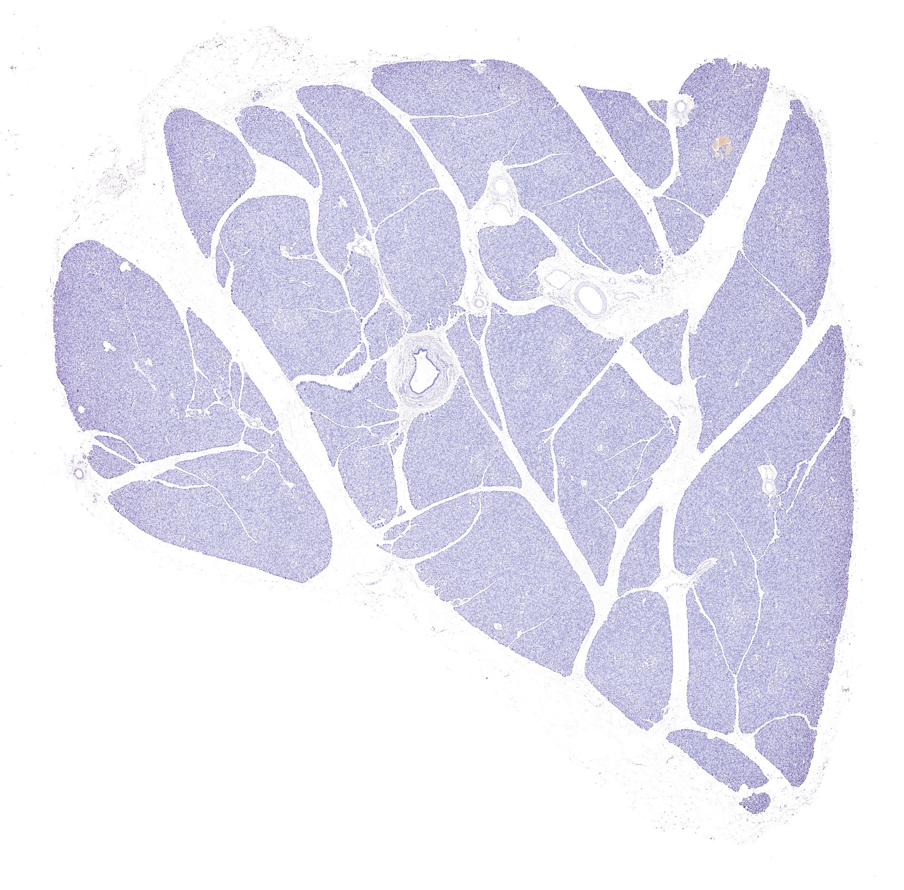
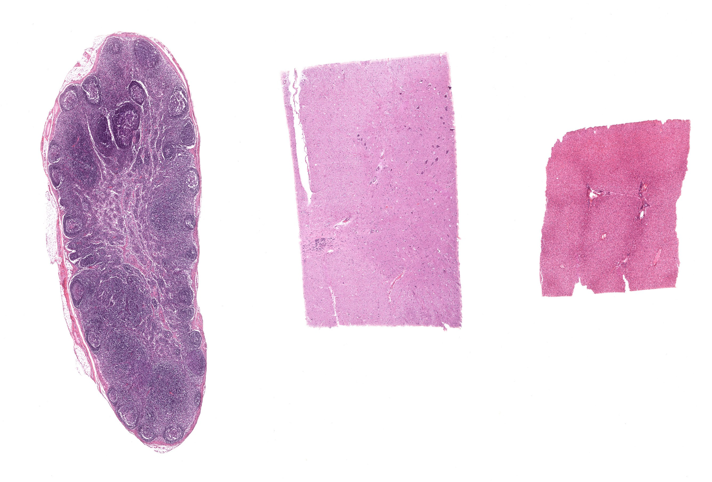
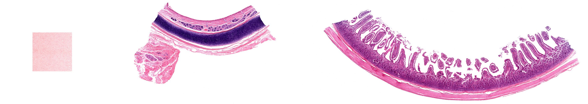
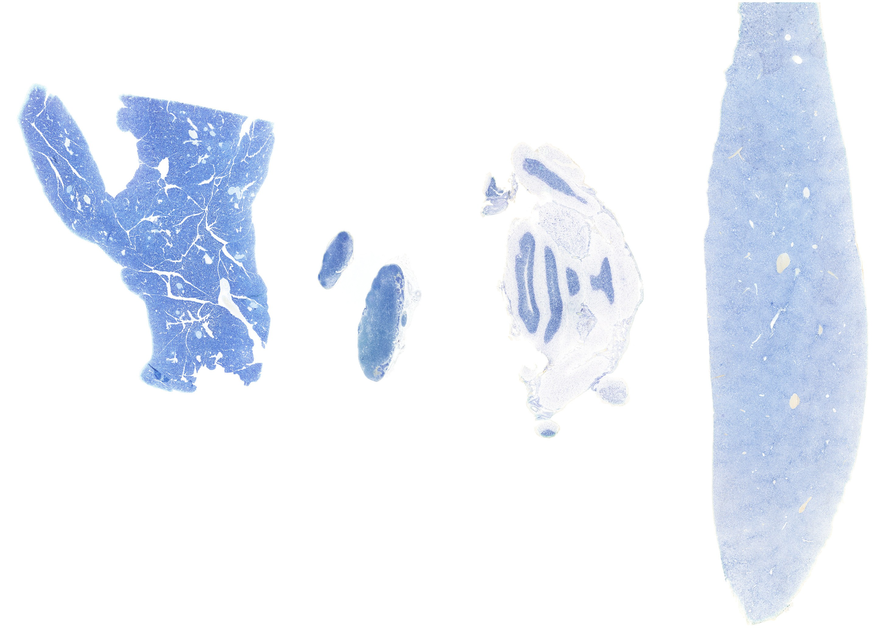
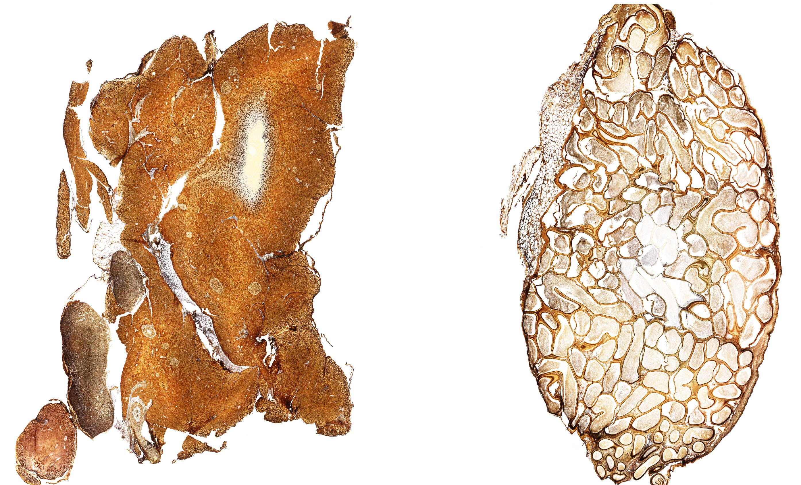
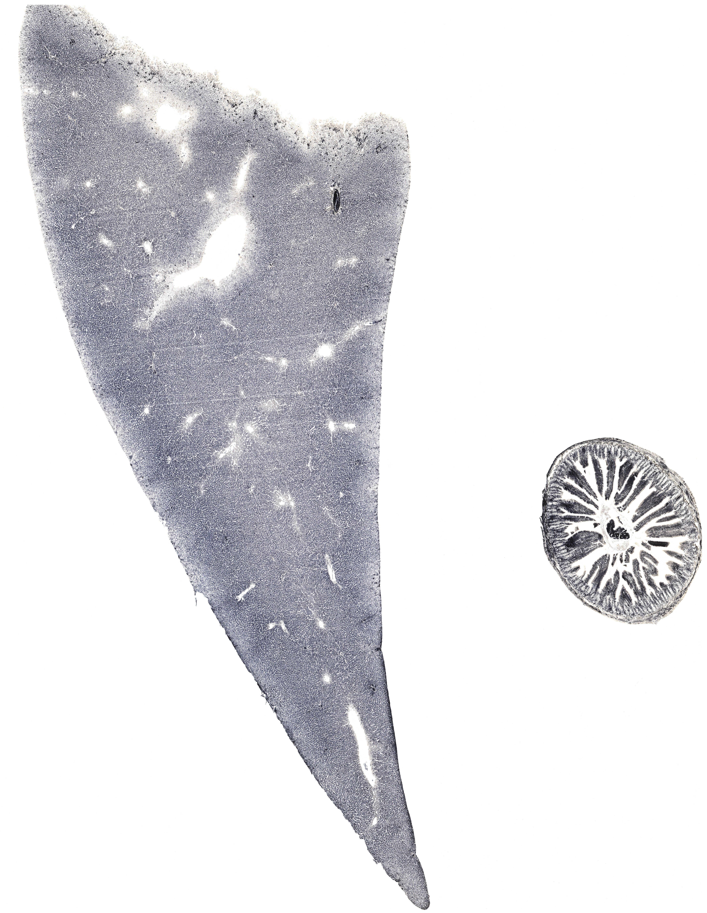
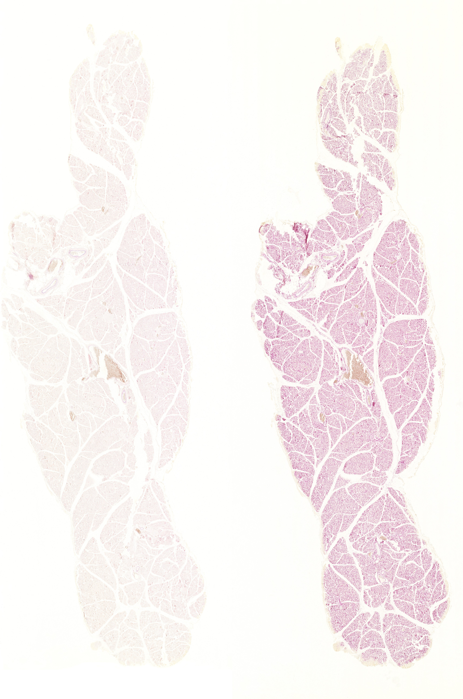
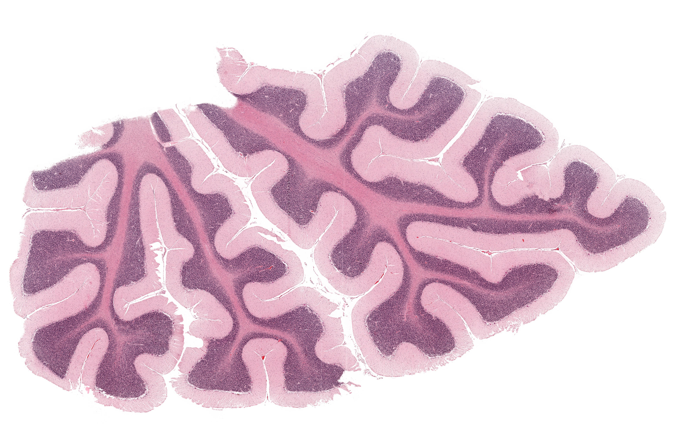
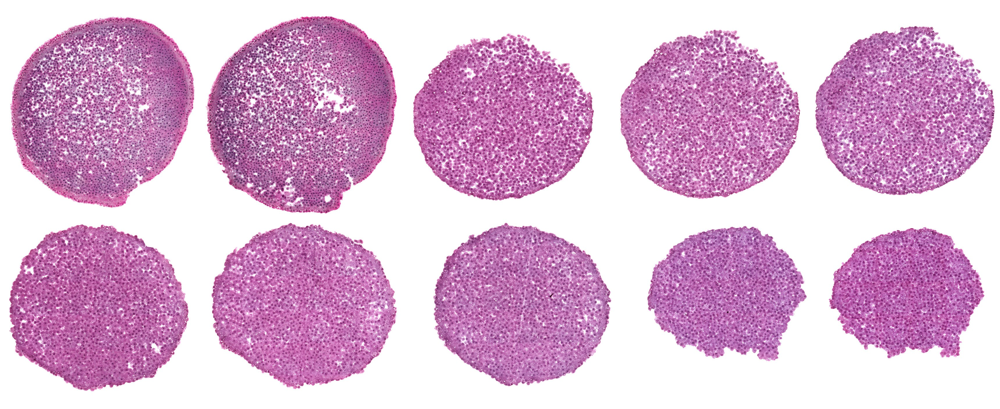
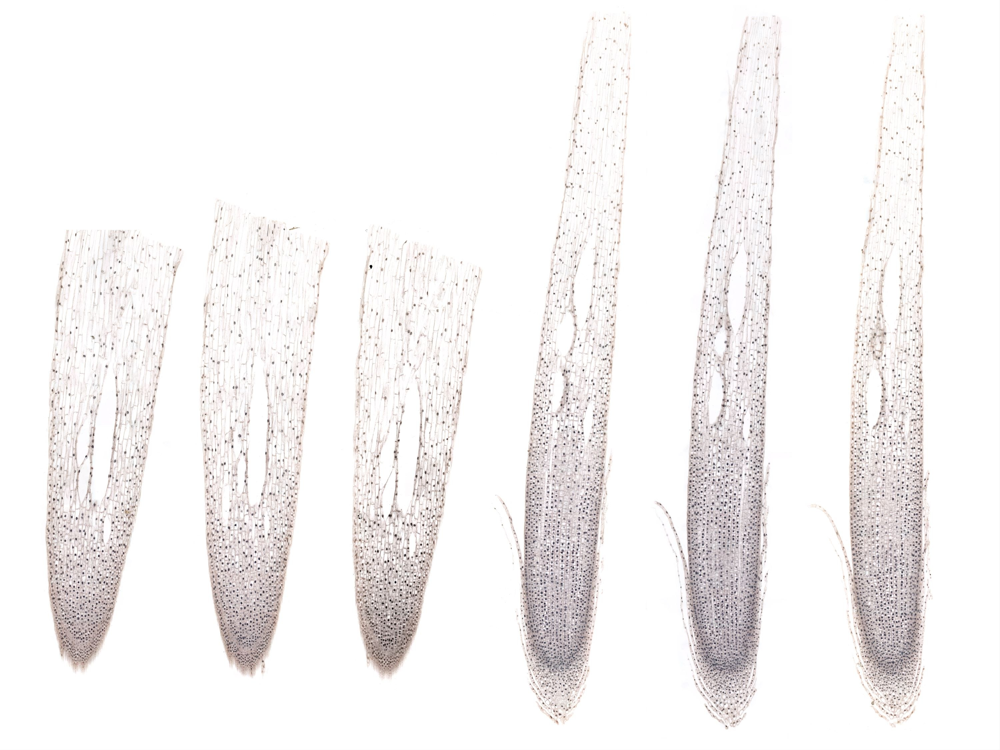

Chapter 01 · 细胞与基本组织
细胞
The Cell · 11 小节 · 12 张切片 · 29 张电镜 · 本地概览 15 张
本章导语
本章是全书的起点，把细胞作为组织的基本结构单位来观察。学习时先弄清光镜与电镜的分辨力差别，再掌握苏木精与伊红各自的着色规律，然后借助几种特殊染色辨认细胞核、高尔基复合体和线粒体在光镜下的位置。最后通过动物与植物细胞有丝分裂切片，比较染色体在分裂各期的形态变化。建议先低倍定方位，再换高倍确认细节，为学习四类基本组织打好基础。
复习重点
- 苏木精染核、伊红染胞质的化学基础与结果判读
- 嗜碱性、嗜酸性与异染性在切片中的表现
- 光镜下核的常染色质区与异染色质区的辨认
- 特殊染色显示高尔基复合体、线粒体与糖原的用途
- 有丝分裂各期染色体形态与纺锤体的关系
易混淆对比
- 常染色质 vs 异染色质：染色浅而细者为常染色质，深而粗并多贴核膜者为异染色质。
- 核仁 vs 异染色质块：核仁边界模糊居核中央，异染色质多沿核膜内侧分布。
- 动物细胞末期 vs 植物细胞末期：前者胞质缢缩分开，后者在两极间形成细胞板。
阅读提示：本页中文要点为自编复习笔记，不是原站正文的翻译；标本图像为经作者书面许可保存的中分辨率概览，每张本地图像卡片保留 © 署名与原页面链接，“原站本章/原站切片”可查看高倍与结构标注。本站为 Histology Guide 的非官方中文学习改编版，未经其认可或背书。
学习目标
Objectives
- 能说出光镜与电镜各自的分辨范围以及适用的观察对象。
- 能解释苏木精与伊红分别使哪些结构着色及其化学基础。
- 能在切片中辨认细胞核、胞质、细胞膜与几种主要细胞器。
- 能比较动物细胞与植物细胞有丝分裂各期的差别。
低倍镜先明确标本的染色方法与切片厚度
高倍镜再逐一核对要观察的结构是否清晰可辨
观察要点
Characteristics to Observe and Notice
- 观察细胞先看核的大小、形状、位置和染色深浅。
- 胞质颜色反映其嗜酸性与嗜碱性的强弱。
- 细胞的排列方式提示其属于上皮、结缔组织还是肌组织。
- 同一张切片中不同细胞的核质比例常差别明显。
低倍镜低倍镜下先扫视整体，找出细胞密集的区域
高倍镜高倍镜下比较核质比例与胞质着色深浅
易混提示：核内深染的团块未必都是染色质，也可能是核仁。
光学显微镜
Light Microscope
- 常规石蜡切片厚度多为五至十微米，可显示细胞群体。
- 光镜分辨力受光波长与数值孔径限制，约为零点二微米。
- 标本须经固定、脱水、包埋、切片和染色才能观察。
- 调节光圈与焦距可改善对比，但不能提高分辨力。
低倍镜先确认切片标签上的器官名称与染色方法
高倍镜再观察细胞轮廓与染色质细节是否锐利
示意图 1 幅（在线查看）
组织学染色
Histological Stains
- 碱性染料带正电荷，与核酸等酸性物质结合而着色。
- 酸性染料带负电荷，主要与蛋白质的碱性基团结合。
- 染料分子的电荷性质决定了组织成分的着色倾向。
- 未被染料着色的结构在光镜下呈透明或折光状态。
低倍镜先看整张切片的主色调偏蓝紫还是偏粉红
高倍镜再判断深染的结构属于细胞核还是胞质
示意图 1 幅（在线查看）
苏木精-伊红染色
H&E Staining
- 苏木精为碱性染料，使染色质与核糖体呈蓝紫色。
- 伊红为酸性染料，使胞质与胶原纤维呈粉红色。
- 核质对比清楚，是观察组织结构最常用的常规染色。
- 固定不及时或脱水不当会造成切片收缩、染色偏淡。
低倍镜先找成片蓝紫色的细胞核确定组织轮廓
高倍镜再比较胞质粉色的深浅判断细胞类型
易混提示：嗜碱性不等于细胞核，胞质中核糖体多时同样偏蓝紫。
相关标本 · 1

点击图片放大 · 本地概览
MHS 268-269-270 Pancreas
胰腺（HE 染色）
H&E
本地概览
2406×2369
图像 © Histology Guide 及/或原始贡献者 · 非商业教育用途，经许可保存；原页面链接见下方
示意图 1 幅（在线查看）
细胞形态多样性
Cellular Diversity
- 同一器官内不同细胞的核形态与染色质分布差别明显。
- 功能活跃的细胞核大而染色浅，异染色质少。
- 合成蛋白质旺盛的细胞胞质嗜碱性强。
- 贮存脂类的细胞胞质被大脂滴占据，核被挤向一侧。
低倍镜先找核形态差异最大的区域
高倍镜再比较常染色质与异染色质的比例
相关标本 · 2

点击图片放大 · 本地概览
MH 001 Nuclear Morphology
细胞核形态
Heterochromatin/Euchromatin
H&E
本地概览
2672×1809
图像 © Histology Guide 及/或原始贡献者 · 非商业教育用途，经许可保存；原页面链接见下方

点击图片放大 · 本地概览
MH 002 Cells and Tissues
细胞与组织
Acidophilic/Basophilic
H&E
本地概览
2807×502
图像 © Histology Guide 及/或原始贡献者 · 非商业教育用途，经许可保存；原页面链接见下方
特殊染色
Specialized Histological Stains
- 甲苯胺蓝可使肥大细胞颗粒呈异染性紫红色。
- 镀银法使高尔基复合体呈棕黑色网状或丝状结构。
- 铁苏木精显示线粒体，福尔根反应显示脱氧核糖核酸。
- 过碘酸雪夫反应把糖原与中性黏蛋白染成紫红色。
低倍镜先按标签确认染色方法及其目标成分
高倍镜再寻找该染色特有的颜色与形态
易混提示：异染性颜色与染料本色不同，须以标签注明的方法为准。
相关标本 · 6

点击图片放大 · 本地概览
MH 003 Toluidine Blue
甲苯胺蓝染色
Orthochromatic/Metachromatic Staining
Toluidine Blue
本地概览
2910×2071
图像 © Histology Guide 及/或原始贡献者 · 非商业教育用途，经许可保存；原页面链接见下方

点击图片放大 · 本地概览
MH 009 Golgi Apparatus
高尔基复合体（镀银法）
Golgi's Method
本地概览
2788×1690
图像 © Histology Guide 及/或原始贡献者 · 非商业教育用途，经许可保存；原页面链接见下方

点击图片放大 · 本地概览
MH 010 Mitochondria
线粒体（铁苏木精）
Iron Hematoxylin
本地概览
4365×5638
图像 © Histology Guide 及/或原始贡献者 · 非商业教育用途，经许可保存；原页面链接见下方

点击图片放大 · 本地概览
MH 012 Nucleic Acids
核酸（福尔根反应）
Feulgen Stain
本地概览
3426×5165
图像 © Histology Guide 及/或原始贡献者 · 非商业教育用途，经许可保存；原页面链接见下方

点击图片放大 · 本地概览
MH 128 Liver
肝（糖原染色）
Glycogen
Periodic Acid-Schiff Reagent
本地概览
3875×4049
图像 © Histology Guide 及/或原始贡献者 · 非商业教育用途，经许可保存；原页面链接见下方

点击图片放大 · 本地概览
MHS 247 Fundic Stomach
胃底腺（黏蛋白染色）
Glycoproteins (mucus)
Periodic Acid-Schiff Reagent
本地概览
5084×3183
图像 © Histology Guide 及/或原始贡献者 · 非商业教育用途，经许可保存；原页面链接见下方
浦肯野细胞
Purkinje Cells
- 浦肯野细胞位于小脑皮质，胞体大呈梨形。
- 主树突反复分支伸向分子层，形似枯树枝。
- 镀银法与免疫荧光可显示其完整突起范围。
- 轴突穿出皮质进入小脑白质，是小脑皮质唯一的传出纤维。
低倍镜先在小脑皮质外缘找到单层排列的大胞体
高倍镜再追踪其粗大主树突的分支走向
相关标本 · 1

点击图片放大 · 本地概览
MH/MHS/RnD Cerebellum
小脑（多种染色）
H&E, Toluidine Blue, Golgi's Method
Immunohistochemistry, Immunofluorescence
本地概览
3904×2419
图像 © Histology Guide 及/或原始贡献者 · 非商业教育用途，经许可保存；原页面链接见下方
细胞分裂
Mitosis
- 体细胞以有丝分裂方式增殖，子细胞染色体数目不变。
- 分裂过程分前、中、后、末四期，核膜核仁周期性消失。
- 核分裂结束后胞质分裂，形成两个子细胞。
- 分裂旺盛的组织中可同时见到各种时相的细胞。
低倍镜先在根尖或生发层找到密集的小细胞群
高倍镜再按染色体形态判断其所处的时期
电镜照片 2 张（在线查看）
动物细胞有丝分裂
Animal Mitosis
- 前期染色质凝集为染色体，中心体移向两极发出星射线。
- 中期染色体排列于赤道面，形态最清晰便于计数。
- 后期着丝粒分裂，姐妹染色单体分别移向两极。
- 末期核膜核仁重现，胞质以缢缩方式分开。
低倍镜先找染色体最粗短的细胞
高倍镜再确认细胞两极有无中心体与纺锤体
易混提示：动物细胞不形成细胞板，末期以缢缩方式分开。
相关标本 · 1

点击图片放大 · 本地概览
MHS 400 Mammalian Mitosis
哺乳动物细胞有丝分裂
H&E
本地概览
3437×1406
图像 © Histology Guide 及/或原始贡献者 · 非商业教育用途，经许可保存；原页面链接见下方
植物细胞有丝分裂
Plant Mitosis
- 洋葱根尖分生区细胞分裂旺盛，是常用观察材料。
- 植物细胞无中心体，纺锤体由极区微管形成。
- 末期两极之间出现细胞板，最终形成新的细胞壁。
- 细胞壁厚而折光，观察时先用低倍找到分生区。
低倍镜先沿根尖纵轴找出细胞小而密的分生区
高倍镜再寻找细胞板或成对染色体图像
相关标本 · 1

点击图片放大 · 本地概览
MH 015 Onion Root Tip
洋葱根尖（植物有丝分裂）
Iron Hematoxylin
本地概览
3000×2250
图像 © Histology Guide 及/或原始贡献者 · 非商业教育用途，经许可保存；原页面链接见下方
本章电镜照片
27 张 · 需在线查看
电镜照片 27 张（在线查看）
自测
10 题 · 自编
先自己回答，再点“显示答案”。标记为易错的项目会进入复习模式。
苏木精使细胞核呈蓝紫色的主要原因是什么？
概念
苏木精是碱性染料，与染色质中的核酸结合而着色。
常规切片中胞质普遍呈粉红色，说明胞质富含哪类成分？
概念
富含碱性蛋白质，与酸性染料伊红结合。
判断一张切片为苏木精-伊红染色的最直接依据是什么？
识别
核呈蓝紫色，胞质与胶原纤维呈粉红色，对比分明。
甲苯胺蓝染色中的异染性在肥大细胞颗粒上表现为哪种颜色？
识别
由染料本色的蓝色变为紫红色。
镀银法染色的切片中高尔基复合体呈什么形态？
识别
核旁棕黑色的网状或丝状结构。
福尔根反应主要用于显示哪种化学成分？
概念
脱氧核糖核酸，即 DNA。
动物细胞与植物细胞有丝分裂末期的区别是什么？
对比
动物细胞以胞质缢缩分开，植物细胞形成细胞板。
中期染色体的排列特点是什么？
识别
着丝粒排列在赤道面上，染色体形态最清晰。
功能活跃的细胞其核通常有什么特点？
对比
核大、染色浅、常染色质多而异染色质少。
光镜分辨力主要受什么因素限制？
概念
照明光的波长与物镜的数值孔径。